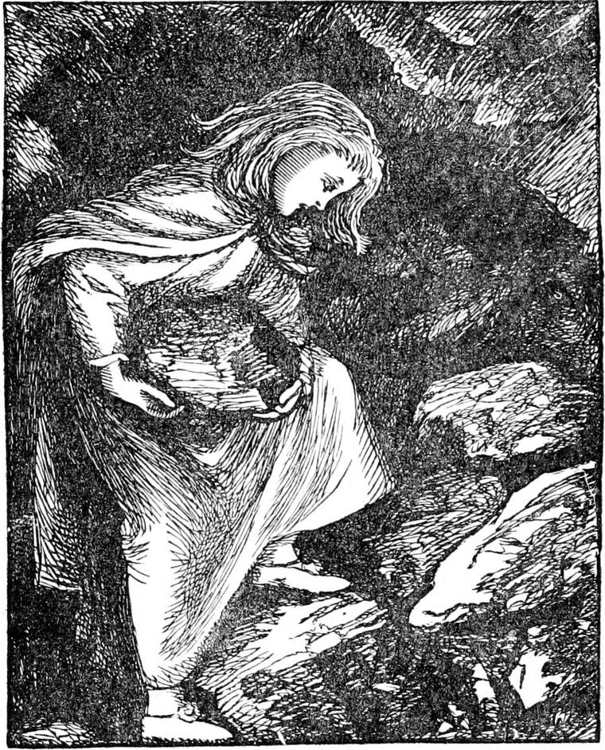
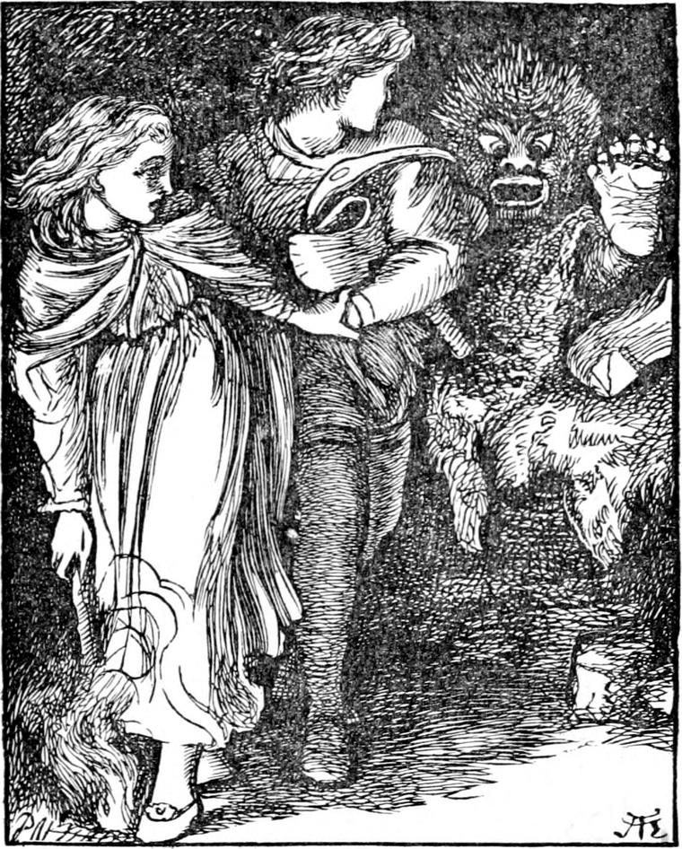

As the princess lay and sobbed she kept feeling the thread mechanically, following it with her finger many times up to the stones in which it disappeared. By and by she began, still mechanically, to poke her finger in after it between the stones as far as she could. All at once it came into her head that she might remove some of the stones and see where the thread went next. Almost laughing at herself for never having thought of this before, she jumped to her feet. Her fear vanished; once more she was certain her grandmother's thread could not have brought her there just to leave her there; and she began to throw away the stones from the top as fast as she could, sometimes two or three at a handful, sometimes taking both hands to lift one. After clearing them away a little, she found that the thread turned and went straight downwards. Hence, as the heap sloped a good deal, growing of course wider towards its base, she had to throw away a multitude of stones to follow the thread. But this was not all, for she soon found that the thread, after going straight down for a little way, turned first sideways in one direction, then sideways in another, and then shot, at various angles, hither and thither inside the heap, so that she began to be afraid that to clear the thread she must remove the whole huge gathering. She was dismayed at the very idea, but, losing no time, set to work with a will; and with aching back, and bleeding fingers and hands, she worked on, sustained by the pleasure of seeing the heap slowly diminish and begin to show itself on the opposite side of the fire. Another thing which helped to keep up her courage was that, as often as she uncovered a turn of the thread, instead of lying loose upon the stone, it tightened up; this made her sure that her grandmother was at the end of it somewhere.

She had got about half-way down when she started, and nearly fell with fright. Close to her ears as it seemed, a voice broke out singing:
You'll have it all in a crash.
Jabber, smash, bother!
You'll have the worst of the pother.
Smash, bother, jabber!—'
Here Curdie stopped, either because he could not find a rhyme to 'jabber', or because he remembered what he had forgotten when he woke up at the sound of Irene's labours, that his plan was to make the goblins think he was getting weak. But he had uttered enough to let Irene know who he was.
'It's Curdie!' she cried joyfully.
'Hush! hush!' came Curdie's voice again from somewhere. 'Speak softly.'
'Why, you were singing loud!' said Irene.
'Yes. But they know I am here, and they don't know you are. Who are you?'
'I'm Irene,' answered the princess. 'I know who you are quite well. You're Curdie.'
'Why, how ever did you come here, Irene?'
'My great-great-grandmother sent me; and I think I've found out why. You can't get out, I suppose?'
'No, I can't. What are you doing?'
'Clearing away a huge heap of stones.'
'There's a princess!' exclaimed Curdie, in a tone of delight, but still speaking in little more than a whisper. 'I can't think how you got here, though.'
'My grandmother sent me after her thread.'
'I don't know what you mean,' said Curdie; 'but so you're there, it doesn't much matter.'
'Oh, yes, it does!' returned Irene. 'I should never have been here but for her.'
'You can tell me all about it when we get out, then. There's no time to lose now,' said Curdie.
And Irene went to work, as fresh as when she began.
'There's such a lot of stones!' she said. 'It will take me a long time to get them all away.'
'How far on have you got?' asked Curdie.
'I've got about the half away, but the other half is ever so much bigger.'
'I don't think you will have to move the lower half. Do you see a slab laid up against the wall?'
Irene looked, and felt about with her hands, and soon perceived the outlines of the slab.
'Yes,' she answered, 'I do.'
'Then, I think,' rejoined Curdie, 'when you have cleared the slab about half-way down, or a bit more, I shall be able to push it over.'
'I must follow my thread,' returned Irene, 'whatever I do.'
'What do you mean?' exclaimed Curdie.
'You will see when you get out,' answered the princess, and went on harder than ever.
But she was soon satisfied that what Curdie wanted done and what the thread wanted done were one and the same thing. For she not only saw that by following the turns of the thread she had been clearing the face of the slab, but that, a little more than half-way down, the thread went through the chink between the slab and the wall into the place where Curdie was confined, so that she could not follow it any farther until the slab was out of her way. As soon as she found this, she said in a right joyous whisper:
'Now, Curdie, I think if you were to give a great push, the slab would tumble over.'
'Stand quite clear of it, then,' said Curdie, 'and let me know when you are ready.'
Irene got off the heap, and stood on one side of it. 'Now, Curdie!' she cried.
Curdie gave a great rush with his shoulder against it. Out tumbled the slab on the heap, and out crept Curdie over the top of it.
'You've saved my life, Irene!' he whispered.
'Oh, Curdie! I'm so glad! Let's get out of this horrid place as fast as we can.'
'That's easier said than done,' returned he.
'Oh, no, it's quite easy,' said Irene. 'We have only to follow my thread. I am sure that it's going to take us out now.'
She had already begun to follow it over the fallen slab into the hole, while Curdie was searching the floor of the cavern for his pickaxe.
'Here it is!' he cried. 'No, it is not,' he added, in a disappointed tone. 'What can it be, then? I declare it's a torch. That is jolly! It's better almost than my pickaxe. Much better if it weren't for those stone shoes!' he went on, as he lighted the torch by blowing the last embers of the expiring fire.
When he looked up, with the lighted torch casting a glare into the great darkness of the huge cavern, he caught sight of Irene disappearing in the hole out of which he had himself just come.
'Where are you going there?' he cried. 'That's not the way out. That's where I couldn't get out.'
'I know that,' whispered Irene. 'But this is the way my thread goes, and I must follow it.'
'What nonsense the child talks!' said Curdie to himself. 'I must follow her, though, and see that she comes to no harm. She will soon find she can't get out that way, and then she will come with me.'
So he crept over the slab once more into the hole with his torch in his hand. But when he looked about in it, he could see her nowhere. And now he discovered that although the hole was narrow, it was much longer than he had supposed; for in one direction the roof came down very low, and the hole went off in a narrow passage, of which he could not see the end. The princess must have crept in there. He got on his knees and one hand, holding the torch with the other, and crept after her. The hole twisted about, in some parts so low that he could hardly get through, in others so high that he could not see the roof, but everywhere it was narrow—far too narrow for a goblin to get through, and so I presume they never thought that Curdie might. He was beginning to feel very uncomfortable lest something should have befallen the princess, when he heard her voice almost close to his ear, whispering:
'Aren't you coming, Curdie?'
And when he turned the next corner there she stood waiting for him.
'I knew you couldn't go wrong in that narrow hole, but now you must keep by me, for here is a great wide place,' she said.
'I can't understand it,' said Curdie, half to himself, half to Irene.
'Never mind,' she returned. 'Wait till we get out.'
Curdie, utterly astonished that she had already got so far, and by a path he had known nothing of, thought it better to let her do as she pleased. 'At all events,' he said again to himself, 'I know nothing about the way, miner as I am; and she seems to think she does know something about it, though how she should passes my comprehension. So she's just as likely to find her way as I am, and as she insists on taking the lead, I must follow. We can't be much worse off than we are, anyhow.' Reasoning thus, he followed her a few steps, and came out in another great cavern, across which Irene walked in a straight line, as confidently as if she knew every step of the way. Curdie went on after her, flashing his torch about, and trying to see something of what lay around them. Suddenly he started back a pace as the light fell upon something close by which Irene was passing. It was a platform of rock raised a few feet from the floor and covered with sheepskins, upon which lay two horrible figures asleep, at once recognized by Curdie as the king and queen of the goblins. He lowered his torch instantly lest the light should awake them. As he did so it flashed upon his pickaxe, lying by the side of the queen, whose hand lay close by the handle of it.
'Stop one moment,' he whispered. 'Hold my torch, and don't let the light on their faces.'
Irene shuddered when she saw the frightful creatures, whom she had passed without observing them, but she did as he requested, and turning her back, held the torch low in front of her. Curdie drew his pickaxe carefully away, and as he did so spied one of her feet, projecting from under the skins. The great clumsy granite shoe, exposed thus to his hand, was a temptation not to be resisted. He laid hold of it, and, with cautious efforts, drew it off. The moment he succeeded, he saw to his astonishment that what he had sung in ignorance, to annoy the queen, was actually true: she had six horrible toes. Overjoyed at his success, and seeing by the huge bump in the sheepskins where the other foot was, he proceeded to lift them gently, for, if he could only succeed in carrying away the other shoe as well, he would be no more afraid of the goblins than of so many flies. But as he pulled at the second shoe the queen gave a growl and sat up in bed. The same instant the king awoke also and sat up beside her.

'Run, Irene!' cried Curdie, for though he was not now in the least afraid for himself, he was for the princess.
Irene looked once round, saw the fearful creatures awake, and like the wise princess she was, dashed the torch on the ground and extinguished it, crying out:
'Here, Curdie, take my hand.'
He darted to her side, forgetting neither the queen's shoe nor his pickaxe, and caught hold of her hand, as she sped fearlessly where her thread guided her. They heard the queen give a great bellow; but they had a good start, for it would be some time before they could get torches lighted to pursue them. Just as they thought they saw a gleam behind them, the thread brought them to a very narrow opening, through which Irene crept easily, and Curdie with difficulty.
'Now,' said Curdie; 'I think we shall be safe.'
'Of course we shall,' returned Irene.
'Why do you think so?' asked Curdie.
'Because my grandmother is taking care of us.'
'That's all nonsense,' said Curdie. 'I don't know what you mean.'
'Then if you don't know what I mean, what right have you to call it nonsense?' asked the princess, a little offended.
'I beg your pardon, Irene,' said Curdie; 'I did not mean to vex you.'
'Of course not,' returned the princess. 'But why do you think we shall be safe?'
'Because the king and queen are far too stout to get through that hole.'
'There might be ways round,' said the princess.
'To be sure there might: we are not out of it yet,' acknowledged Curdie.
'But what do you mean by the king and queen?' asked the princess. 'I should never call such creatures as those a king and a queen.'
'Their own people do, though,' answered Curdie.
The princess asked more questions, and Curdie, as they walked leisurely along, gave her a full account, not only of the character and habits of the goblins, so far as he knew them, but of his own adventures with them, beginning from the very night after that in which he had met her and Lootie upon the mountain. When he had finished, he begged Irene to tell him how it was that she had come to his rescue. So Irene too had to tell a long story, which she did in rather a roundabout manner, interrupted by many questions concerning things she had not explained. But her tale, as he did not believe more than half of it, left everything as unaccountable to him as before, and he was nearly as much perplexed as to what he must think of the princess. He could not believe that she was deliberately telling stories, and the only conclusion he could come to was that Lootie had been playing the child tricks, inventing no end of lies to frighten her for her own purposes.
'But how ever did Lootie come to let you go into the mountains alone?' he asked.
'Lootie knows nothing about it. I left her fast asleep—at least I think so. I hope my grandmother won't let her get into trouble, for it wasn't her fault at all, as my grandmother very well knows.'
'But how did you find your way to me?' persisted Curdie.
'I told you already,' answered Irene; 'by keeping my finger upon my grandmother's thread, as I am doing now.'
'You don't mean you've got the thread there?'
'Of course I do. I have told you so ten times already. I have hardly—except when I was removing the stones—taken my finger off it. There!' she added, guiding Curdie's hand to the thread, 'you feel it yourself—don't you?'
'I feel nothing at all,' replied Curdie.
'Then what can be the matter with your finger? I feel it perfectly. To be sure it is very thin, and in the sunlight looks just like the thread of a spider, though there are many of them twisted together to make it—but for all that I can't think why you shouldn't feel it as well as I do.'
Curdie was too polite to say he did not believe there was any thread there at all. What he did say was:
'Well, I can make nothing of it.'
'I can, though, and you must be glad of that, for it will do for both of us.'
'We're not out yet,' said Curdie.
'We soon shall be,' returned Irene confidently. And now the thread went downwards, and led Irene's hand to a hole in the floor of the cavern, whence came a sound of running water which they had been hearing for some time.
'It goes into the ground now, Curdie,' she said, stopping.
He had been listening to another sound, which his practised ear had caught long ago, and which also had been growing louder. It was the noise the goblin-miners made at their work, and they seemed to be at no great distance now. Irene heard it the moment she stopped.
'What is that noise?' she asked. 'Do you know, Curdie?'
'Yes. It is the goblins digging and burrowing,' he answered.
'And you don't know what they do it for?'
'No; I haven't the least idea. Would you like to see them?' he asked, wishing to have another try after their secret.
'If my thread took me there, I shouldn't much mind; but I don't want to see them, and I can't leave my thread. It leads me down into the hole, and we had better go at once.'
'Very well. Shall I go in first?' said Curdie.
'No; better not. You can't feel the thread,' she answered, stepping down through a narrow break in the floor of the cavern. 'Oh!' she cried, 'I am in the water. It is running strong—but it is not deep, and there is just room to walk. Make haste, Curdie.'
He tried, but the hole was too small for him to get in.
'Go on a little bit,' he said, shouldering his pickaxe. In a few moments he had cleared a larger opening and followed her. They went on, down and down with the running water, Curdie getting more and more afraid it was leading them to some terrible gulf in the heart of the mountain. In one or two places he had to break away the rock to make room before even Irene could get through—at least without hurting herself. But at length they spied a glimmer of light, and in a minute more they were almost blinded by the full sunlight, into which they emerged. It was some little time before the princess could see well enough to discover that they stood in her own garden, close by the seat on which she and her king-papa had sat that afternoon. They had come out by the channel of the little stream. She danced and clapped her hands with delight.
'Now, Curdie!' she cried, 'won't you believe what I told you about my grandmother and her thread?'
For she had felt all the time that Curdie was not believing what she told him.
'There!—don't you see it shining on before us?' she added.
'I don't see anything,' persisted Curdie.
'Then you must believe without seeing,' said the princess; 'for you can't deny it has brought us out of the mountain.'
'I can't deny we are out of the mountain, and I should be very ungrateful indeed to deny that you had brought me out of it.'
'I couldn't have done it but for the thread,' persisted Irene.
'That's the part I don't understand.'
'Well, come along, and Lootie will get you something to eat. I am sure you must want it very much.'
'Indeed I do. But my father and mother will be so anxious about me, I must make haste—first up the mountain to tell my mother, and then down into the mine again to let my father know.'
'Very well, Curdie; but you can't get out without coming this way, and I will take you through the house, for that is nearest.'
They met no one by the way, for, indeed, as before, the people were here and there and everywhere searching for the princess. When they got in Irene found that the thread, as she had half expected, went up the old staircase, and a new thought struck her. She turned to Curdie and said:
'My grandmother wants me. Do come up with me and see her. Then you will know that I have been telling you the truth. Do come—to please me, Curdie. I can't bear you should think what I say is not true.'
'I never doubted you believed what you said,' returned Curdie. 'I only thought you had some fancy in your head that was not correct.'
'But do come, dear Curdie.'
The little miner could not withstand this appeal, and though he felt shy in what seemed to him a huge grand house, he yielded, and followed her up the stair.